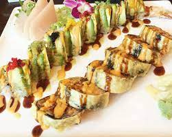

Westborough, Massachusetts was established in 1717, making the town 306 years old. Westborough has a lot of history, but I would rather talk about my favorite things to do in this town.
 One of my favorite restaurants is Sake Hana, a town favorite. Serving delicious, authentic Japanese food, you're sure to leave replenished. The staff is friendly and are quick to respond to any changes. Be careful not to eat too much here, because it's very easy to do with their large portions. Enjoy!
One of my favorite places to hang out is the Bay State Commons. This plaza has many stores and restaurants including a Panera Bread, Roche Brothers, and Boston Interiors, making it somewhere you can get everything you need. However, this isn't what makes the Commons so great. The large green space is truly the highlight. Concerts, block parties, and town-wide movie nights are some of the things that occur here, creating a bonding experience for the town.